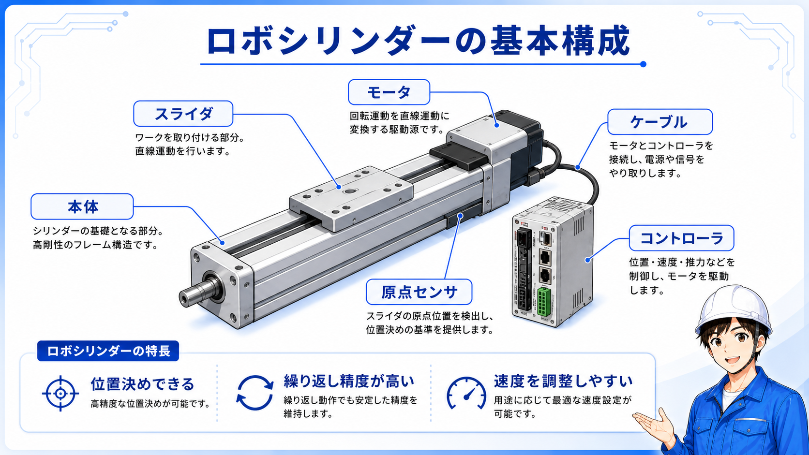
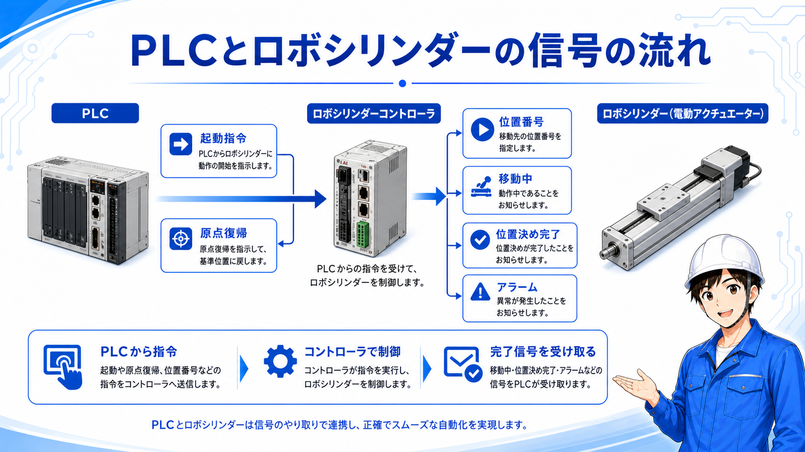

向いている人
- ロボシリンダーが何をする機器か知りたい人
- エアシリンダーとの違いを整理したい人
- PLCとの信号のやり取りをざっくり理解したい人
IAIロボシリンダーとは、ざっくり言うとモーターで動く電動シリンダーです。
エアシリンダーのように前進・後退するだけでなく、指定した位置まで動かしたり、速度を変えたり、途中位置で止めたりできるのが大きな特徴です。
現場では、ワークを押す、スライドさせる、位置を合わせる、搬送の一部を動かすなど、空気圧より細かい動きがほしい場所で使われます。
最初から細かい型式や設定を覚えるより、エアシリンダーよりも細かく位置や速度を決めやすい駆動機器として見ると理解しやすいです。
ロボシリンダーは、本体だけで完結しているように見えますが、実際にはコントローラ、電源、PLC、信号線などとセットで動きます。
まずは「シリンダー本体」「コントローラ」「PLCからの指令」「完了やアラームの戻り信号」を分けて見ると、現場でも追いやすくなります。

実際に動く部分です。スライダやロッドが動いて、ワークを押す・送る・位置決めする役割を持ちます。
ロボシリンダーを動かすための制御部です。位置データや速度、加減速などの設定が入ります。
位置No選択、起動、停止、リセットなど、設備側から動作指令を出します。
位置決め完了、原点復帰完了、アラームなど、ロボシリンダー側の状態をPLCへ返します。
ロボシリンダーを理解する時は、エアシリンダーと比べると分かりやすいです。
エアシリンダーは、空気圧で前進・後退するシンプルな動きが得意です。一方でロボシリンダーは、電動で位置や速度を細かく扱いやすいのが特徴です。

| 項目 | エアシリンダー | ロボシリンダー |
|---|---|---|
| 動力 | 空気圧 | モーター・電気 |
| 基本の動き | 前進・後退が中心 | 指定位置へ移動、途中停止、速度調整がしやすい |
| 位置決め | ストッパやセンサで見ることが多い | 位置データで管理しやすい |
| 現場で見る信号 | 電磁弁、前進端、後退端など | 位置No、起動、完了、原点、アラームなど |
| 向いている場面 | 単純な押す・引く動作 | 位置を変えたい、速度を変えたい、条件で動きを分けたい場面 |

エアシリンダーはシンプルで扱いやすく、ロボシリンダーは細かい動きに向きます。現場では、必要な動きに合わせて使い分けます。
ロボシリンダーを見る時に大事なのは、機械本体の動きだけでなく、PLCとコントローラの間でどんな信号をやり取りしているかです。
現場でよく見る考え方としては、PLCから「どの位置へ動くか」「動作を開始するか」を出し、ロボシリンダー側から「動作が終わったか」「アラームが出ていないか」を返す流れです。

PLC側から、どの位置データで動かすかを指定します。複数位置を使う設備ではここが重要です。
位置Noを指定したうえで、スタート信号を出してロボシリンダーを動かします。
指定位置まで動いたら、位置決め完了信号などが返ります。次工程へ進む条件になります。
アラームや異常信号が出ている場合、起動できない、途中で止まる、復旧操作が必要になることがあります。

先輩ロボシリンダーは、動いている本体だけを見るより、PLCから何を指令して、何の完了信号を待っているかを見ると追いやすいよ。

後輩エアシリンダーの前進端・後退端を見る感覚に近いけど、位置Noや完了信号も見るんですね。
実際の設備でロボシリンダーを見る時は、いきなりパラメータ画面を見るより、まずは全体の流れを押さえる方が安全です。
ワークを押しているのか、スライドさせているのか、位置決めしているのかを先に見ます。
電源投入後や異常復旧後に、原点復帰が必要な設備があります。原点復帰完了の有無を確認します。
同じロボシリンダーでも、位置Noによって停止位置や速度が変わることがあります。
次工程へ進まない時は、PLC側が位置決め完了や原点復帰完了を待っている場合があります。
過負荷、位置ずれ、非常停止、原点未完了などでアラームが出ると動作できないことがあります。
ロボシリンダーが悪いように見えても、実際はワークの引っかかりやガイド抵抗が原因のこともあります。
PLCから指令が出ているか、ロボシリンダーが動いているか、完了信号が返っているか、アラームが出ていないか。この順で追うと原因を絞りやすくなります。
ロボシリンダーは便利な機器ですが、エアシリンダーと同じ感覚だけで見るとつまずきやすい部分があります。
実際にはコントローラ、PLC、電源、信号線、位置データが関係します。本体だけでは判断しにくいです。
原点が取れていないと、位置決め動作に進めない場合があります。復旧時は特に確認します。
間違った位置Noを選んでいると、想定と違う位置へ動くことがあります。
設備が止まって見えても、PLC側では完了信号待ちになっていることがあります。

ロボシリンダーはゆっくり動かせる場合もありますが、押す力や移動範囲によっては危険です。手動操作や復旧確認では、可動範囲と周囲の安全を確認してください。
IAIロボシリンダーは、モーターで動く電動アクチュエータで、エアシリンダーよりも位置決めや速度調整をしやすい機器です。
現場では、シリンダー本体だけでなく、コントローラ、PLCからの指令、位置No、起動信号、完了信号、アラームまでセットで見ると理解しやすくなります。
ロボシリンダーを見る時は、「何を動かすか」「どの位置Noか」「起動信号は出ているか」「完了信号は返っているか」「アラームはないか」を順番に確認します。